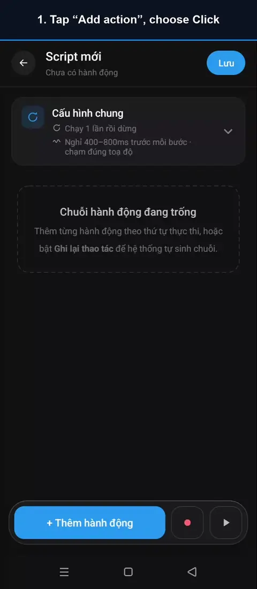
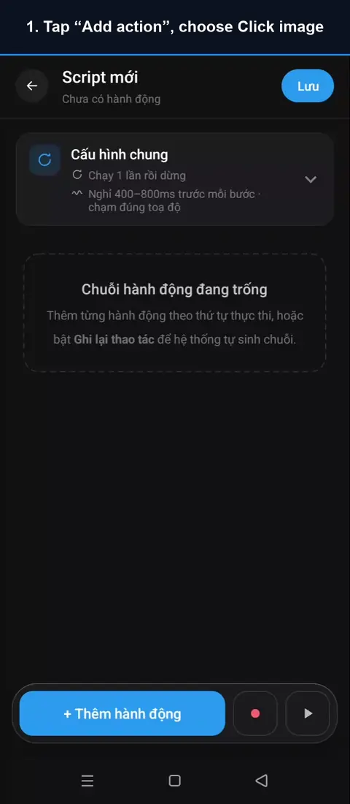
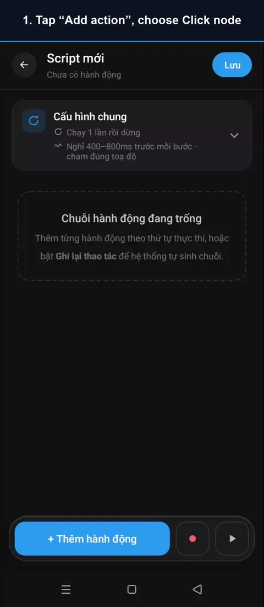
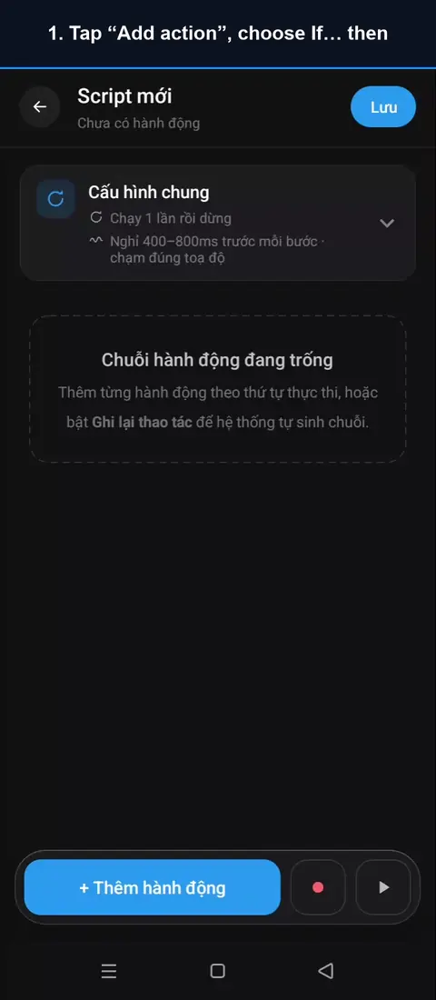

User guide
Each action has a short video recorded on a real phone, using a sample app so you can see the result. Every tap lights up so it is easy to follow. Actions marked PRO are part of AutoGest Pro.
The videos were recorded with the app in Vietnamese; the captions and the steps below use the English names you will see in the app.
- You tap
- AutoGest taps by itself while the script runs
Touch and gestures
Wait and detect
System
Script flow
Click
The most basic action: AutoGest taps exactly the point you picked on the screen.

- Tap “Add action”, choose Click
- Tap “Add point”
- Open the app, drag the crosshair to the spot
- Tap OK to save the point
- Back in AutoGest, the point is filled in
- Tap Test run, then open the app
▶ AutoGest clicks exactly the chosen spot
- Points are scaled to the screen size, so the script still taps the right spot on a phone with a different screen.
- In General settings you set the pause between steps and the tap offset, so taps feel natural, like a real person.
- Button moves around each time? Use Click image or Click text so AutoGest finds the button before tapping.
Rapid click
Taps one point over and over, from 1 to 20 times a second — made for games that need fast tapping.
- Tap “Add action”, choose Rapid click
- Tap “Add point”
- Open the app, put the crosshair on the button
- Tap OK to save the point
- Back in AutoGest, set the speed and tap count
- Tap Test run, then open the app
▶ AutoGest taps 30 times, 10 taps per second
- Stop after a number of taps, after a length of time, or keep going until you tap Stop.
- Above 10 taps a second is faster than a human hand; some apps may treat it as unusual.
- Turn on Natural rhythm so the gaps between taps vary slightly, like a real person tapping.
Long click
Presses and holds one point for as long as you choose — for hold-to-confirm buttons, context menus and drag selection.
- Tap “Add action”, choose Long click
- Tap “Add point”
- Open the app, put the crosshair on the button
- Tap OK to save the point
- Back in AutoGest, choose how long to hold
- Tap Test run, then open the app
▶ AutoGest holds the button for 2 s, it unlocks
- Pick the hold time on the card; for a “hold to confirm” button, make it a little longer than the app asks for.
Swipe
Drags a finger from a start point to an end point — swipe to unlock, move a slider, flip through pages.
- Tap “Add action”, choose Swipe
- Pick the start point
- Go back, pick the end point
- Go back, choose the swipe duration
- Tap Test run, then open the app
▶ AutoGest swipes from the start to the end point
- A short duration is a fast swipe (a fling); a long duration is a slow drag (drag and drop, sliders).
Scroll
Scrolls a list up, down, left or right with one swipe across the middle of the screen — no point to pick.
- Tap “Add action”, choose Scroll
- Choose the direction and duration
- Tap Test run, then open the app
▶ AutoGest swipes across the middle to scroll
- Combine it with Repeat until to keep scrolling until what you are looking for shows up.
Paste text
Taps a text field, then fills in the whole text you wrote — fast, and any language or accent comes through exactly.
- Tap “Add action”, choose Paste text
- Tap “Add point”, aim at the text field
- Go back, enter the text to paste
- Tap Test run, then open the app
▶ AutoGest pastes the whole text into the field
- Separate several texts with
||and AutoGest picks one at random on each run. - App blocks pasting? Use Type characters to tap each key like a person typing.
Type characters PRO
Records every key you tap on the keyboard; when the script runs, AutoGest taps the same keys again with your typing rhythm.
- Tap “Add action”, choose Type characters
- Tap the key recording box, type on the keyboard
- Tap Done to save the key taps
- Pick the field to type into (optional)
- Go back, tap Test run, then open the app
▶ AutoGest taps the field, then replays each key
- Use the same keyboard (and the same kind of field) when recording and when running, because AutoGest taps by key position.
- After typing, AutoGest reads the field back; if the text does not match, the step fails and the remaining keys are not tapped.
- Don’t need key-by-key typing? Tap Switch to Paste text on the card.
Wait
Pauses the script for a set time (in milliseconds) before the next step — wait for an app to load or an animation to finish.
- Tap “Add action”, choose Wait
- Enter the wait time (ms)
- Add a Click step to see the pause
- Go back, set the script to repeat 2 times
- Tap Test run, then open the app
▶ Taps come 3 s apart, plus the step pause
- Besides the Wait step, every step also gets a random pause, set in General settings.
- Not sure how long to wait? Wait for image and Wait for color wait exactly until the screen is ready.
Wait for image PRO
Waits until an image appears (or disappears) on the screen before running the next step. The image is cropped straight from the screen.
- Tap “Add action”, choose Wait for image
- Tap “Pick image”, choose Crop from the screen
- Open the screen, tap Capture, frame the image
- Go back, add a Click where the image shows up
- Go back, tap Test run, then open the app
▶ AutoGest waits for the gift box, then runs the Click
- Frame the image tightly and leave out any background that changes.
- Choose Disappear to wait for a loading screen or a dialog to go away.
- Works in games too, because AutoGest compares images instead of reading the app’s structure.
Wait for color PRO
Waits until a point on the screen has exactly the color you picked — a light turning green, a button lighting up, an energy bar filling up.
- Tap “Add action”, choose Wait for color
- Tap “Add point”, aim at the spot with the color
- Go back: AutoGest has read the color there
- Add a Click step on the “go” button
- Go back, tap Test run, then open the app
▶ AutoGest waits for the green light, then taps “go”
- Pick the point while the color you want to wait for is showing: AutoGest reads the color at that point right away.
- Choose Changes to wait until the point no longer has its current color.
Click image PRO
Finds an image on the screen and taps its center — wherever the button is, AutoGest finds it, even in games.

- Tap “Add action”, choose Click image
- Tap “Pick image”, choose Crop from the screen
- Open the screen with the image, tap Capture
- Drag the frame tight around the image, tap OK
- Go back, tap Test run, then open the app
▶ AutoGest waits for the gift box, then taps it
- Set Maximum wait long enough if the image shows up late.
- Lower Minimum match when the image changes a little between runs (shadows, glowing edges).
Click text
Finds a piece of text on the screen and taps it — no need to know where the button is beforehand.
- Tap “Add action”, choose Click text
- Enter the text shown on the button
- Tap Test run, then open the app
▶ Wherever the button is, AutoGest finds the text and taps
- The text only has to contain what you entered; upper and lower case don’t matter.
- Games draw with graphics and have no text to read: use Click image.
Click node PRO
Pick exactly one element in the app’s Accessibility tree (even an icon-only button); when the script runs, AutoGest finds that element again and taps it.

- Tap “Add action”, choose Click node
- Tap “Pick node”, open the app, tap Capture
- Tap the button you want, then “Pick node”
- Go back, choose how to find the node
- Tap Test run, then open the app
▶ AutoGest finds the heart button and taps it
- Find it by
xpath(the default),resource-id,textorcontent-desc— choose whichever is most stable in that app. - Games have no node tree: use Click image.
Wait & detect notification PRO
Waits for a notification containing the phrase you picked, reads aloud the part you want, then runs the next step. The Balance change mode reads the amount aloud from bank alerts.
- Add the action Wait & detect notification
- Tap “Pick a sample notification”, choose one
- Tap the first, then the last word of the phrase
- Choose what to read, tap “Use this sample”
- Add a Click step on the confirm order button
- Go back, tap Test run, then open the app
- When a customer places an order…
▶ AutoGest reads the notification, then confirms
- Needs Notification access; the app only asks for it when you pick a sample notification.
- A script with only notification waits runs in the background, even while the phone is locked — an order alert or a payment announcer.
- A sample only keeps the words that identify it, never the content of the notification.
Open app
Opens an installed app and waits for it to show on the screen — the script gets to the right place by itself, you don’t open it by hand.
- Tap “Add action”, choose Open app
- Tap “Pick app”, choose the app to open
- Tap Test run, no need to open the app yourself
▶ AutoGest opens the chosen app by itself
- An app already running in the background is brought to the front as it was, not restarted.
Back
Presses the system Back key, just as you would — close a detail screen, hide the keyboard, go back one step.
- Tap “Add action”, choose Back
- Tap Test run, then open the app
- During the countdown, open a message
▶ AutoGest presses Back, the list is back
- No point needed, so it works the same on every phone.
Home screen
Goes to the phone’s home screen. The home screen is blurred in the video for privacy.
- Tap “Add action”, choose Home screen
- Tap Test run, then open the app
▶ AutoGest goes to the home screen (blurred for privacy)
- Handy at the end of a script, or before an Open app step.
Recent apps
Opens the recent apps list to switch between apps. The list is blurred in the video for privacy.
- Tap “Add action”, choose Recent apps
- Tap Test run, then open the app
▶ AutoGest opens recent apps (blurred for privacy)
- Combine it with Click to pick a card in the list.
If… then PRO
Checks the screen (an image, a color, some text, or which loop round it is), then runs the Then branch or the Else branch.

- Tap “Add action”, choose If… then
- Choose Text, enter the text to look for
- Turn off the Else branch, tap Done
- Add to the Then branch: Click the close (X) button
- Go back, tap Test run, then open the app
▶ AutoGest sees the “ad” text, so it taps close
- Wait up to is how long to wait for the condition to show up; if time runs out first, it counts as false.
- Turn on Invert condition to run the Then branch when it is not found.
- Blocks are one level deep. To nest deeper, move the inner part into its own script and use Call script.
Repeat until PRO
Runs the steps in the loop again and again until the screen shows the image, color or text you picked. The condition is checked before every round.
- Tap “Add action”, choose Repeat until
- Stop on Text: enter the text shown when done
- Add to the loop: Click the “load more” button
- Go back, tap Test run, then open the app
▶ AutoGest taps “load more” until all is loaded
- The number of rounds is always capped (20 by default); if the condition is still false at the end, the loop stops and the step counts as failed.
- If the condition is already true at the start, the loop body doesn’t run at all.
Call script PRO
Runs another script right at this step, then comes back — build it once, reuse it in many places.
- Tap “Add action”, choose Call script
- Tap “Pick script”, choose the script to call
- Choose how many times to call it
- Tap Test run, then open the app
▶ AutoGest runs the tapping script 3 times
- The called script stays the original: edit it once and every place that uses it changes too.
- Calls nest up to 5 levels deep; endless call loops are blocked.